Sourcing Manager
Use the Sourcing Manager to source product that isn't currently available in your inventory. You can use it directly from the service request, and receive the product there when it arrives.
In a service request, shows to the right of a line item when there isn't enough quantity available to complete the service request.
- Only tires and items marked Inventoried need sourcing. Tires always need sourcing, even when not marked Inventoried.
- Labor, other charges and fees, shop fees and specifications never need sourcing.
- Non-catalog engine oil doesn't need sourcing unless your store turns on the System Setting Engine Oil Non-Catalog Requires Sourcing.
Tip: If several items need to come from the same supplier, select at the top of the body of the service request. A list of all items on the service request that need sourcing displays. Check the ones to source from the same supplier. All selected lines are added to one sourcing document.
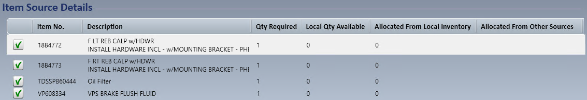
Select the sourcing icon to display the sourcing options.
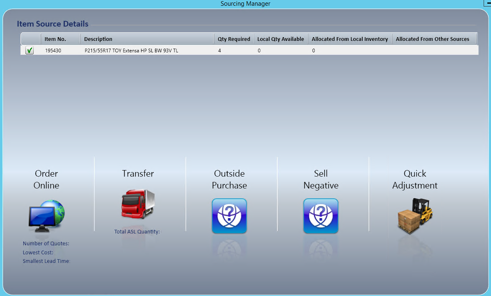
Quick Adjustment
Use Quick Adjustment to adjust inventory in so you can proceed with the order. This is generally used when you physically have the inventory but the system shows 0 on hand.
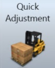
- Select Quick Adjustment.
- The adjustment screen displays for you to verify.
- The cost from the service request fills in.
- The customer comments show that the adjustment was done through the Sourcing Manager, with the name of the customer.
- The adjustment references the order ID it was done for.
- The adjustment screen displays for you to verify.
- Select to process the inventory adjustment. You can print it if necessary.
- Select Done.
- You return to the service request, and shows to the right of the line item to indicate the product is now available.
Sell Negative
Use Sell Negative to complete the service request, receive payment and generate the invoice before the product is received. This takes your inventory to a negative quantity on hand and uses the product's average cost until the actual product installed on the vehicle is received.
- Select Sell Negative.
- When asked to confirm that you want to sell negative, select Yes or No.
- You return to the service request, and shows to the right of the line item to indicate it's in a status that can now be completed.
Note: Because you're selling before the product is received, the average cost may or may not be correct. By default, it uses the average cost from the last time the item was received.
Tip: Receiving the product instead of selling negative gives the correct average cost, so the gross profit percentage for the service request is also calculated correctly.
Outside Purchase
Use Outside Purchase to create a purchase order directly from the service request. It shows on the Purchases tab of the Home screen until the purchase order is received. Use it when online ordering isn't available, or when you mostly order from the vendor by phone or fax.
- Select Outside Purchase.
- Select the vendor from the dropdown list.
- Use Look For to narrow the search.
- If the vendor isn't in the list, check Show All Vendors.
- Select Done.
- Enter the Reference Number. We suggest the service request ID.
- Verify the items to purchase, their cost and quantity.
- If the cost is different, enter the correct cost.
- Enter order comments if needed.
- Select .
- Select Done.
- The Outside Purchase icon shows to the right of the line item, telling you the item was ordered as an outside purchase. You can also see it on the Purchases tab of the Home page.
Receive an outside purchase
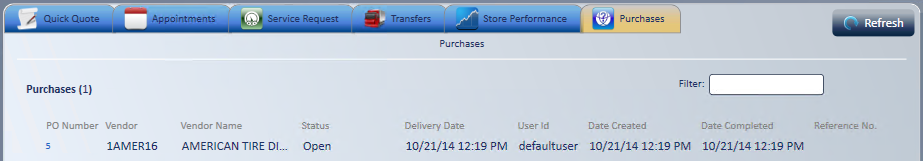
To receive an outside purchase from the service request, select the Outside Purchase icon next to the line item to receive.
Tip: To find the customer or service request number, check the reference number field on the Purchases tab.
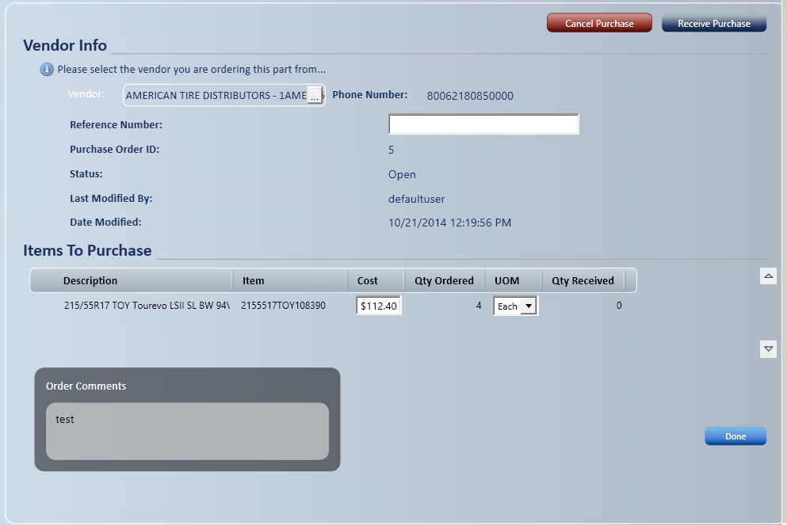
Option 1: Receive from the service request
- Select the Outside Purchase icon on the line item to receive.
- If several line items need receiving, select to receive all line items from the supplier.
- Open the service request.
- Select .
- Verify the total to be received.
- If it's different from the original purchase order, change the quantity in the To Be Received column.
- Select Done.
- Select Done again.
Important: In the Receive Open Purchase Order and Pending Transfer window, a partly received purchase order shows a Close Purchase Order icon. Select it when the rest isn't coming. Quantities change to match what was received and the purchase order becomes Fully Received. This can't be undone.
Note: Closing here requires the Sourcing Manager - Close PO/PO Items Linked to SR and Purchase Orders - Close PO access rights.
-
- You return to the service request, and shows to the right of the line item to indicate it's in a status that can now be completed.
- The sourcing icon stays until all units are received.
Note: Receiving or canceling an outside purchase from the Sourcing Manager requires the Sourcing Manager - Receive PO/PO Items Linked to SR or Sourcing Manager - Cancel PO/PO Items Linked to SR access right. Deleting or declining a line with an open purchase order asks what to do with the PO. See Additional Features & Functionality under Creating Service Request.
Option 2: Receive from the Purchases tab
- On the Purchases tab, double-click the purchase order.
- A message box shows the service request number the purchase order is linked to.
- Select OK.
- Select Receive .
- An inventory receipt is created, referencing the purchase order it was created from.
- If the quantity received doesn't equal what was ordered on the purchase order, enter the quantity received in the Qty column.
- Select Process .
- A printable inventory receipt is created.
- Quantity on hand and available quantity are updated.
- The purchase order status is updated to Fully Received or Partially Received.
- A fully received purchase order is removed from the Purchases tab.
- A partially received purchase order is marked "partially received" in the Status column of the Purchases tab.
- In the service request, shows to the right of the line item to indicate it's in a status that can now be completed.
- The sourcing icon stays until all units are received.
Tip: Receive the product in the service request or purchase order before you complete the service request. That way the average cost recalculates to the correct cost, and the service request gets the right gross profit percentage.
Transfer
Use Transfer to see product at your other stores and request it with a transfer request.
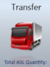
- Select Transfer.
- A grid shows the items that need sourcing, with each item's available quantity at each alternate stocking location. Several items can go on one transfer request.
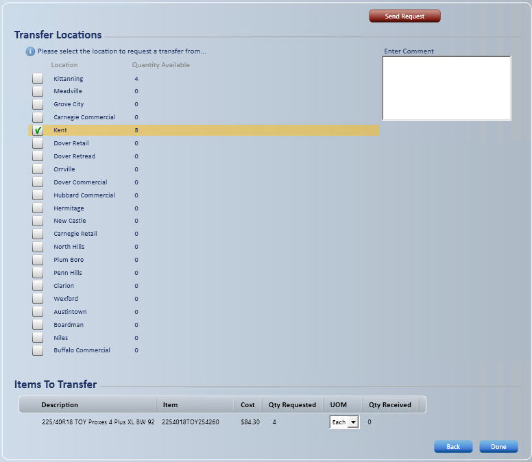
- Check the one store to request the items from. All items are checked by default. You can't change the quantity requested on this screen.
- Enter comments if necessary.
- Items the store doesn't have enough of are removed from the request, and a message lists them.
- With the Sourcing - Transfer Request access right, you can keep unavailable items on the request as a backorder instead. Answer No at "Would you like to remove the unavailable items from this request?"
- Select .
- The transfer request details list the quantity and transfer cost of the product. By default, the cost is priced from the receiving store's price base and price rules. If the System Setting Transfer Pricing Source is set to Sending Location, the sending store's price base and price rules are used.
- The transfer shows on the Transfers tab of the requesting store's Home page with a status of Requested.
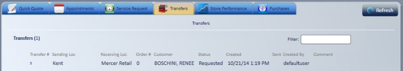
-
- It also shows on the Transfers tab of the sending store's Home page with a status of Requested.
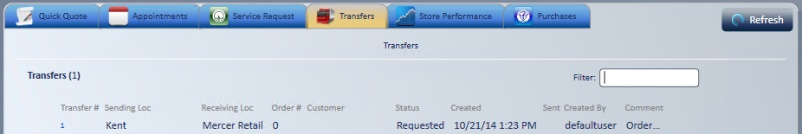
Send the transfer (sending store)
- Open the transfer from the Transfers tab, pick the product, and verify Qty Sent.
- The sending transfer document automatically references the requesting store's Order Id in the order comments.
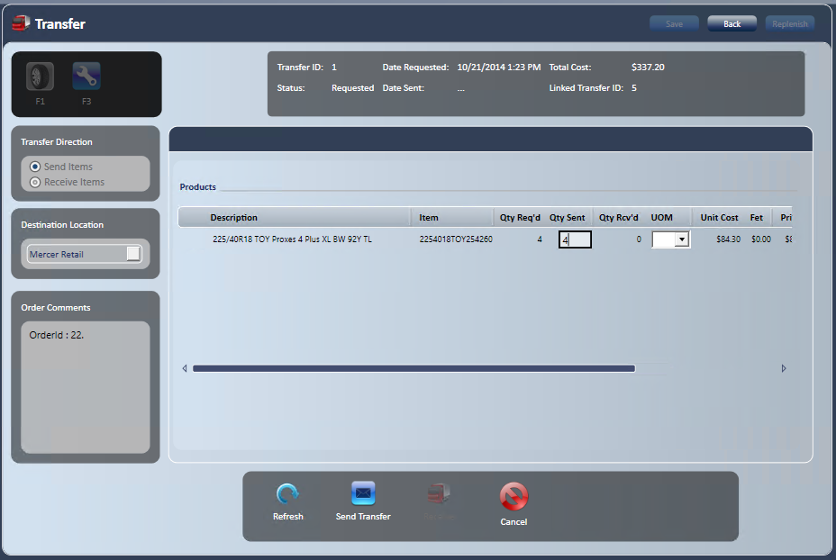
- Select Send Transfer.
- When a window asks you to confirm sending the transfer, select Yes or No.
- A transfer order is created for you to print and send with the product, and the status changes to In Transit on the Transfers tab of both the sending and receiving stores.
- The receiving store's Transfers tab
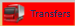
shows in red to alert them that the product was sent.
- The receiving store's Transfers tab
- A transfer order is created for you to print and send with the product, and the status changes to In Transit on the Transfers tab of both the sending and receiving stores.
Receive the transfer (receiving store)
The receiving store receives the product from the Transfers tab or from the service request.
- Open the transfer from the Transfers tab, or from the service request whose ID is referenced on the transfer documentation, by selecting the transfer icon to the right of the line item.
- Select .
- Verify the quantity to receive, or change it if it's different from the quantity on the transfer documentation.
- If the quantity is different, the transfer invoice to the requesting store is automatically changed to match the amount received. The requesting store is only invoiced through the intercompany account for the product it received.
- Select Done.
- Select Done again.
Note: When the requesting store receives the product, inventory is relieved from the sending store and added to the requesting store.
Order Online
Use Order Online to order online from vendors that take part in electronic ordering.
Follow the same steps as for Outside Purchase above.
- The Order Online window shows an FET column for each item.
- For Michelin BWS vendors, all offers for the item are shown by fulfiller and delivery. Pick the offer to order.
- If the online submission fails, the purchase order is canceled. Try again or use Outside Purchase.
- For the vendors that support online ordering and their setup, see Vendor Ordering.
Note: Also use Outside Purchase to order items that will NOT be added to inventory or affect average cost, such as parts from a dealership or junk yard. These generic SKUs are set up under a branch of inventory management as non-inventoried, so they don't update average cost and their QOH is always 0.